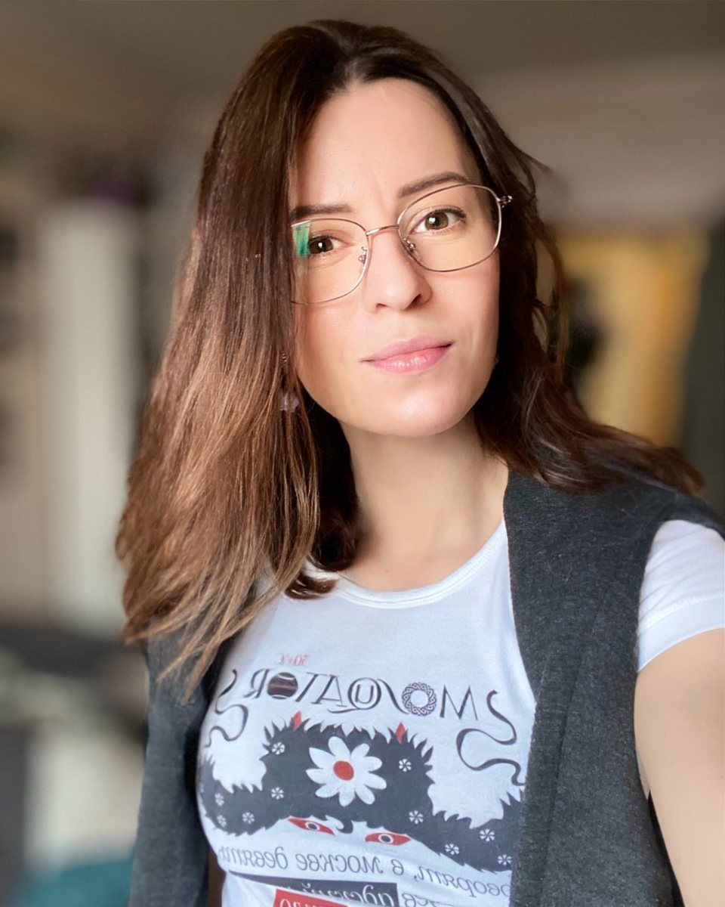

Кто что делал
Автор, я и ИИ: где проходит граница
Главный вопрос заказчика к любой работе с нейросетями — «а что здесь сделал человек?». Отвечаю по этапам. Темы всегда приходили от Юрия Гордона, текст глав — только его; ни одна моя формулировка не попала в книгу. Всё между темой и текстом — моя работа, ИИ в ней исполнитель.
Тема и вопросПериод, объекты, что выяснить
Ставит тему — часто одной фразой
Тему не выбираю
—
Каркас и брифОт одной фразы до четырёх страниц ТЗ: периодизация, типы объектов, вопросы, формат результата
Отвечает на вопросы — мои и модели
Беру интервью, пишу ТЗ
Задаёт уточняющие вопросы к черновику ТЗ — в моём проекте для промптов
Маршрут и инструментыКакие системы, в каком порядке, что параллельно, что каскадом
—
Выбираю системы и порядок
—
Поиск и черновой синтезИсточники, каталоги карточек, первые выводы
—
Веду по ТЗ, останавливаю, переспрашиваю
Ищет и сводит — до семи систем на одно ТЗ
Проверка и отбраковкаСверка по сканам и первоисточникам, уровни уверенности, фиксация фейков
—
Сверяю по сканам, отбраковываю, ставлю уровень уверенности
Даёт второе мнение — другая система
ИнженерияБазы из 18 изданий, кастомные ассистенты, обход лимита в 80 МБ
—
Собираю базы и ассистентов, чиню, когда ломается
Работает внутри собранного
Сводка для автора«Шесть систем — шесть выводов», реестры источников, таблицы, хронологии
Читает, задаёт вопросы
Отбираю, структурирую, отвечаю на вопросы
Делает черновую компоновку
Текст главы и иллюстрацииКнига «Буквы XX века»
Пишет сам, от первой до последней строки
Не участвую
—
Публичный рассказ о процессеПосты, отчёты, интервью
Пишет о проекте в своих каналах
Пишу в своём канале, беру у автора интервью
—

Юлия РепринцеваМоя роль
Архитектор ИИ-исследования
Не соавтор: текст — авторский. Не оператор нейросети: ИИ здесь инструмент. Между ними — тот, кто превращает тему в задание, задание в процесс, а результат процесса — в проверенный материал, на который можно опереться.
Юрий Гордон называл это короче: «нейрокапитан», «руководитель нейропомощников».
Что это значит для вашего проекта
Вы остаётесь автором решения, текста или продукта. Я беру на себя всё, что между вопросом и проверенным ответом: постановку задачи, маршрут по инструментам, проверку и сборку материала. Граница авторства оговаривается заранее и соблюдается — как здесь.
А если текст писать некому — по первой профессии я журналист: могу написать его сама, на проверенной фактуре. Здесь Юрий Гордон писал сам, потому что так было устроено его проектом, а не потому, что иначе нельзя.